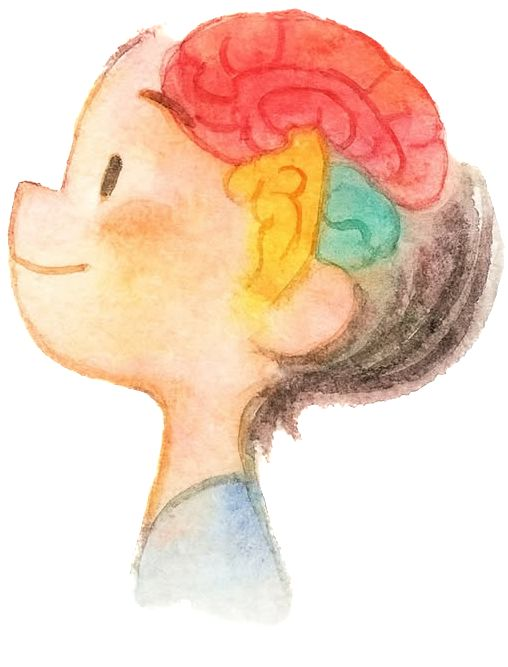
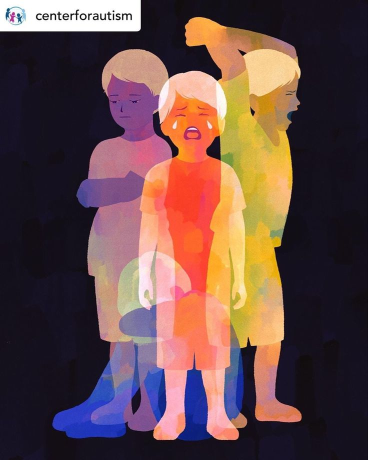
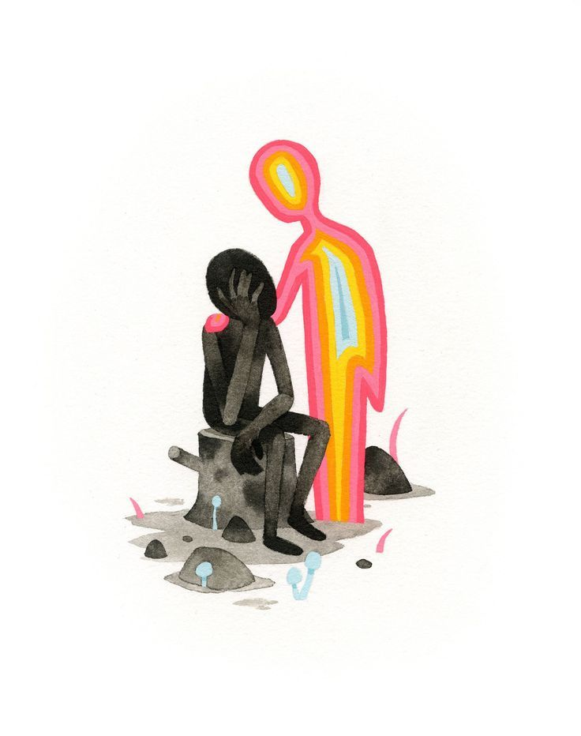

Attention-Deficit/Hyperactivity Disorder (ADHD) is a common neurodevelopmental condition characterized by persistent patterns of inattention, hyperactivity, and impulsivity. Typically diagnosed in childhood, it often continues into adolescence and adulthood, affecting daily functioning, relationships, and academic or occupational performance.
ADHD symptoms are grouped into inattention(difficulty focusing, disorganization, forgetfulness) and hyperactivity-impulsivity(restlessness, excessive talking, acting without thinking). To qualify for diagnosis, these symptoms must persist for at least six months, appear in multiple settings (home, school, or work), and cause significant impairment. There is no single diagnostic test; evaluations involve interviews, standardized behavior scales, and clinical observation.
Though there is no cure, evidence-based treatments can significantly reduce symptoms. Stimulant medications (like methylphenidate and amphetamines) are the most widely used and effective, while nonstimulant options exist for some individuals. Behavioral therapy, parent training, and cognitive behavioral therapy (CBT) help develop coping and organizational skills. For preschool-aged children, behavioral interventions are usually recommended before medication.
Though there is no cure, evidence-based treatments can significantly reduce symptoms. Stimulant medications (like methylphenidate and amphetamines) are the most widely used and effective, while nonstimulant options exist for some individuals. Behavioral therapy, parent training, and cognitive behavioral therapy (CBT) help develop coping and organizational skills. For preschool-aged children, behavioral interventions are usually recommended before medication.
Autism spectrum disorder (ASD) is a neurodevelopmental condition that affects how a person perceives and interacts with the world. It involves persistent challenges in social communication and restricted or repetitive behaviors, with symptoms that vary widely in form and severity across individuals. ASD begins in early childhood and continues throughout life.
ASD arises from complex interactions between genetic predisposition and environmental influences. Factors linked with higher likelihood include family history of ASD, certain genetic conditions (e.g., fragile X syndrome, tuberous sclerosis), older parental age, very low birth weight, and prenatal exposures such as valproate. Research consistently shows no causal link between childhood vaccines and autism.
There is no laboratory test for ASD. Clinicians diagnose it by observing behavior and development, typically using standardized tools such as the Autism Diagnostic Observation Schedule (ADOS). Reliable diagnosis is possible by age 2, though many individuals—especially women and those with milder traits—are identified later. Early screening at 18 and 24 months is recommended by the American Academy of Pediatrics.
ASD has no cure, but early, individualized intervention can significantly improve outcomes. Evidence-based therapies include behavioral (e.g., applied behavior analysis), speech-language, occupational, and social-skills training. Medications may address co-occurring issues such as anxiety, ADHD, or irritability. Lifespan support—educational accommodations, employment coaching, and community inclusion—helps autistic people achieve fuller independence and quality of life.


